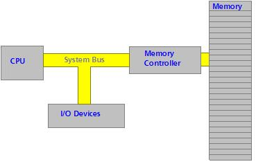

Computer Systems Architecture
We are going to first look at the x86 architecture in detail. This will be important to us, especially in protected mode, and understanding how protected mode works.
We are going to cover every single thing of how the computer works and operates down to the bit level. To understand how this fits in with the BIOS during bootup, you have to remember that you can "start" other processors. The BIOS does just this with the main processor, and we can do the same to support multi processor systems.
We will cover:
- The 80x86 Registers
- System Organization
- The System Bus
- Real Mode Memory Map
- How an instruction executes
- Software Ports
In some ways, this is like a system architecture tutorial. However, we are going to look at the architecture from an OS development point of view. Also, We will cover every single thing within the architecture.
Understanding the basic concepts will make understanding Protected Mode in a lot more detail. In the next tutorial, we are going to use everything we learn here to switch into protected mode.
let's have some fun, shall we...?
The World of Protected Mode
We all heard this term before, haven't we? Protected Mode (PMode) is an operation mode available from the 80286 and later processors. PMode was primarily designed to increase the stability of the systems.
As you know from the previous tutorials, Real Mode has some big problems. For one, we can write a byte anywhere we want. This can overwrite code or data, that may be used by software ports, the processor, or even ourselves. And yet, we can do this in over 4,000 different ways--both directly and indirectly!
Real Mode has no Memory Protection. All data and code are dumped into a single all purpose use memory block.
In Real Mode, you are limited to 16 bit registers. Because of this, you are limited to 1 MB of memory.
No support for hardware level Memory Protection or Multitasking.
Quite possibly the biggest problem, was that there is no such thing as "rings". All programs execute at Ring 0 level, as every program has full control over the system. This means, in a single tasking environment, a single instruction (such as cli/hlt) can crash the entire OS if you are not careful.
a lot of this should sound familiar from when we covered Real Mode in depth. Protected Mode fixes all of these problems.
Protected Mode:
- Has Memory Protection
- Has hardware support for Virtual Memory and Task State Switching (TSS)
- Hardware support for interrupting programs and executing another
- 4 Operating Modes: Ring 0, Ring 1, Ring 2, Ring 3
- Access to 32 bit registers
- Access to up to 4 GB of memory
We covered the Rings of Assembly Language in a previous tutorial. Remember that we are in Ring 0, while normal applications are in Ring 3 (Usually). We have access to special instructions and registers that normal applications do not. In this tutorial, we are going to be using the LGDT instruction, along with a far jump using our own defined segment, and the use of the processor control registers. None of this is available in normal programs.
Understanding the system architecture and how the processor works will help us understand this a lot better.
System Architecture
The x86 family of computers follow the Van Neumann Architecture. The Van Neumann Architecture is a design specification that states a typical computer system has three main components:
- Central Processing Unit (CPU)
- Memory
- Input/output (IO)
For example:

There are a couple of important things to note. As you know, the CPU fetches data and instructions from memory. The Memory Controller is responsible for calculating the exact RAM chip and memory cell that it resides in. Because of this, The CPU communicates with the Memory Controller.
Also, notice the "I/O Devices". They are connected to the system bus. All I/O Ports are mapped to a given memory location. This allows us to use the IN and OUT instructions.
The hardware devices can access memory through the System Bus. It also allows us to notify a device when something is happening. For example, if we write a byte to a memory location for a hardware device controller to read, the processor can signal the device that there are data at that address. It does this through the Control Bus part of the entire System Bus. This is basically how software interacts with hardware devices. We will go into much more detail later as this is the only way to communicate to devices in protected mode, hence this is important.
We will cover everything in detail first. Then, we will combine them and learn how they all work together, by watching an instruction get executed at the hardware level. From here, we will talk about I/O Ports, and how software interacts with hardware.
As you have experience with x86 Assembly, Some or even a lot of this should be familiar. However, we are going to cover a lot of things most assembly books don't cover in detail. More specifically, things specific to Ring 0 programs.
The System Bus
The System Bus is also known as the Front Side Bus that connects the CPU to the Northbridge on a motherboard.
The System Bus is a combination of the Data Bus, Address Bus, and Control Bus. Each electronic line on this bus represents a single bit. The voltage level used to represent a "zero" and "one" is based off Standard Transistor-Transistor Logic (TTL) Levels. We don't need to know this though. TTL is a part of Digital Logic Electronics, at which computers are built.
As you know, the System Bus is made up of 3 buses. let's look at them in detail, shall we?
Data Bus
The data bus is the series of electronic lines that which data can be carried over. The size of the data bus is 16 lines/bits, 32 lines/bits, or 64 lines/bits. Note the direct relationship between an electronic line and a single bit.
This means, A 32 bit processor has and uses a 32 bit data bus. This means, it can handle a 4 byte piece of data simultaneously. Knowing this, we can watch the data sizes in our programs, and help increase speed.
How? The processor will need to pad 1,2,4,8, and 16 bit data to the size of the data bus with 0's. Larger pieces of data will need to be broken (and padded) so the processor can send the bytes correctly over the data bus. Sending a piece of data that is the size of the data bus will be faster because no extra processing is done.
For example, let's say we have a 64 bit data type, but a 32 bit data bus. In the first Clock Cycle, only the first 32 bits are sent through the data bus to the Memory Controller. In the second Clock Cycle, the processor references the last 32 bits. Note: Notice that, the larger the data type, the more clock cycles it will take!
Generally, the terms "32 bit processor", "16 bit processor", etc. generally refers to the size of the data bus. So, a "32 bit processor" uses a 32 bit data bus.
Address Bus
Whenever the processor or an I/O device needs to reference memory, it places its address on the Address Bus. Okay, we all know that a Memory Address represents a location in memory. This is an abstraction though.
A "Memory Address" is just a number used by the Memory Controller. That's it. The Memory Controller takes the number from this bus, and interprets it as a memory location. Knowing the size of each RAM chip The Memory Controller could easily reference the exact RAM chip and byte offset in it. Beginning with Memory Cell 0, the Memory Controller interprets this offset as the Address that we want.
The Address Bus is connected to the processor through the Control Unit (CU), and the I/O Controller. The Control Unit is inside the processor, so we will look at that later. The I/O Controller controls the interface to hardware devices. We will look at that later.
Just like with the Data Bus, Each Electronic line represents a single bit. Because there are only two unique values in a bit, There is exactly 2^n unique address that a CPU can access. Therefore, The number of bits/lines in the Address Bus represents the maximum memory the CPU can access.
In the 8080 through 80186 processor each had 20 line/bit address busses. The 80286 and 80386 has 24 lines/bits, and the 80386+ has 32 lines/bits.
Remember that the entire x86 family is designed to be portable with all older processors. This is why it starts in Real Mode. Their processor architectures were limited to 1 MB because they only had access to 20 address lines -- line 0 through line 19.
This is important to us, Because this limitation still applies to us! What we need to do is Enable access through the 20th address line. This will allow our OS to access more then 4 GB of memory. More on this later.
Control Bus
Okay, we could place data on the Data Bus, and reference memory addresses using the Address Bus. But, how do we know what to do with this data? Are we reading it from memory? Or we writing the data?
The Control Bus is a series of lines/bits that represent what a device is trying to do. For example, the processor would set the READ bit or WRITE bit to let the Memory Controller know it wants to read or write the data in the Data Bus from the memory location stored in the Address Bus.
The Control Bus also allows the processor to signal a device. This lets a device that we need its attention. For example, perhaps we need the device to read from the memory location from the Address Bus? This will let the device know of what we need. This is important in I/O Software ports.
Of course, remember the system bus is not directly connected to hardware devices. Instead, it is connected to a central controller--The I/O Controller, which, in turn, signals the devices.
That's all there is to the system bus. It is the pathway for accessing and reading memory from the processor (Through its Control Unit (CU)) and the I/O devices (Through the I/O Controller) to the Memory Controller, which is responsible for calculating the exact RAM chip and finding the memory cell we want to access.
"Controller" ... You will hear me say this term a lot. I will explain why later.
Memory Controller
The Memory Controller is the primary interface between the System Bus (aka, Front Side Bus(FSB) ) on the motherboard to the physical RAM chips.
We seen the term Controller before, haven't we? What exactly is a controller?
Controllers
A Controller provides basic hardware control functionality. It also provides the basic interface between hardware and software. This is important to us. Remember that in protected mode, we will not have any interrupts available to us. In the bootloader, we used several interrupts to communicate with the hardware. Using these interrupts in protected mode will cause a Triple Fault. Yikes--so what are we to do?
We will need to communicate to the hardware directly. We do this through the controllers. (We will talk more about how controllers work later when we cover the I/O Subsystem).
The Memory Controller
The Memory Controller provides a way of reading and writing memory locations through software. The Memory Controller is also responsible for the constant refreshing of the RAM chips to insure they retain the information.
Memory Controllers a Multiplexer and Demultiplexer circuits to select the exact RAM chip, and location that references the address in the Address Bus.
Double Data Rate (DDR) Controller
A DDR Controller is used to refresh DDR SDRAM, which uses the System Clock pulse to allow reading and writing memory.
Dual Channel Controller
A Dual Channel Controller are used where DRAM devices are separated into two small busses, allowing reading and writing two memory locations at once. This helps increasing speed when accessing RAM.
Memory Controller Conclusion
The Memory Controller takes the address we put into the Address Bus. This is good and all, but how do we tell the Memory Controller to read or write memory? And where does it get its data from? When reading memory, The processor sets the Read bit in the Control Bus. similarly, The processor sets the Write bit when writing memory on the Control Bus.
Remember that the Control Bus allows the processor to control how other devices use the bus.
The data the Memory Controller uses is inside the Data Bus. The Address to use is in the Address Bus.
Reading Memory
When reading memory, The Processor places the absolute address to read from on the Address Bus. The processor then sets the READ control line.
The Memory Controller now has control. The controller converts the absolute address into a physical RAM location using its Multiplexer circuit, and places the data into the Data Bus. It then resets the READ bit to 0, and sets the READY bit.
The processor now knows the data is now in the data bus. It copies this data, and executes the rest of the instruction...perhaps store it in BX?
Writing Memory
The process of writing memory is similar.
First, the processor places the memory address into the Address Bus. It then places the data to write into the Data Bus. Then, it sets the WRITE bit in the Control Bus.
This lets the Memory Controller know to write the data in the Data Bus to the Absolute address in the Address Bus. When done, the Memory Controller resets the WRITE bit, and sets the READY bit on the Control Bus.
Memory Read-Write Conclusion
We do not communicate directly with the Memory Controller through software, but instead, we communicate indirectly with it. Whenever we read or write memory, we are using the Memory Controller. This is the interface between our software and the Memory Controller / RAM Chip Hardware.
Yippee--let's take a look at the I/O Subsystem now, shall we? Oh wait! What about that 1337 Multiplexer circuit? That is a physical electronic circuit in the Memory Controller. To understand how it works, one has to know Digital Logic Electronics. Because this is irrelevant to us, we are not going to cover it here. If you would like to know more, Google!
I/O Subsystem
The I/O Subsystem simply represents Port I/O. This is the basic system that provides the interface between software and hardware controllers.
let's look closer...
Ports
A Port simply provides an interface between two devices. There are two types of ports: Hardware Ports and Software Ports.
Hardware Ports
A Hardware Port provides the interface between two physical devices. This port is usually a connection device of sorts. This includes, but is not limited to: Serial Ports, Parallel ports, PS/2 Ports, 1394, FireWire, USB Ports, etc.
These ports are usually on the sides/back/or front of a typical computer system.
Okay... um, if you want to see a port, just follow any line that connects to your computer. Please, for the sake of Jeeves, Don't ask me what these do--you have got to already now! Seriously!
In typical electronics, the pins in these ports carry signals that represent different things depending on the hardware device. These pins represent, just like the system bus--wait for it... Bits! Each pin represents a single bit. Yep--that's it.
Two general classifications for Hardware Ports include "Male" and "Female" ports. Male ports are connections where the pins emerge from the connector. Female ports are the opposite of this. Hardware ports are accessed through Controllers. More on this later...
Software Ports
THIS will be very important to us. This is our interface to the hardware. A Software Port is a number. That's it. This number represents a hardware controller... Kind of.
You may know that several port numbers could represent the same controller. The reason? Memory Mapped I/O. The basic idea is that we communicate to hardware by specifying certain memory addresses. The port number represents this address. ... Once more, kind of. The meaning of the addresses could represent a specific register in a device, or a control register.
We will look more closer later.
Memory Mapping
On the x86 Architecture, the processor uses specific memory locations to represent certain things.
For example, The address 0xA000:0 represents the start of VRAM in the video card. By writing bytes to this location, you effectively change what is currently in video memory, and effectively, what is displayed on screen.
Other memory addresses can represent something else--let's say, a register perhaps for the Floppy Drive Controller (FDC)?
Understanding what addresses are what is critical, and very important to us.
x86 Real Mode Memory Map
General x86 Real Mode Memory Map: |Memory Locations|Used for| |---|---| |0x00000000 - 0x000003FF| Real Mode Interrupt Vector Table| |0x00000400 - 0x000004FF| BIOS Data Area| |0x00000500 - 0x00007BFF| Unused| |0x00007C00 - 0x00007DFF| Our Bootloader| |0x00007E00 - 0x0009FFFF| Unused| |0x000A0000 - 0x000BFFFF| Video RAM (VRAM) Memory| |0x000B0000 - 0x000B7777| Monochrome Video Memory| |0x000B8000 - 0x000BFFFF| Color Video Memory| |0x000C0000 - 0x000C7FFF| Video ROM BIOS| |0x000C8000 - 0x000EFFFF| BIOS Shadow Area| |0x000F0000 - 0x000FFFFF| System BIOS|
Note: It is possible to remap all of the above devices to use different regions of memory. This is what the BIOS POST does to map the devices to the table above.
Okay, this is cool and all. Because these addresses represent different things, by reading (or writing) to specific addresses, we get obtain (or change) information with ease from different parts of the computer.
For example, remember when we talked about INT 0x19? We referenced that writing the value 0x1234 at 0x0040:0x0072, and jumping to 0xFFFF:0, we effectively warm reboot the computer. (similar to Windows ctrl+alt+del.) Remembering the conversion between segment:offset addressing mode and absolute addressing, we can convert 0x0040:0x0072 to the absolute address 0x000000472, a byte within the BIOS data area.
Another example is text output. But writing two bytes into 0x000B8000, we can effectively change what is in text mode memory. Because this is constantly refreshed when displayed, it effectively displays the character on screen. Cool?
let's go back to port mapping, shall we? We will look back at this table a lot more later.
Port Mapping - Memory Mapped I/O
A "Port Address" is a special number that each Controller listens to. When booting, the ROM BIOS assigns different numbers to these controller devices. It starts the primary processor, loads the BIOS program at 0xFFFF:0 (Remember this? Compare this with the table in the previous section).
The ROM BIOS Assigns these numbers to different controllers, so controllers have a way to identify themselves. This allows the BIOS to set up the Interrupt Vector Table, which communicates to the hardware using this special number.
The processor uses the same system bus when working with I/O Controllers. The processor puts the special port number into the Address Bus, as if it was reading memory. It also sets the READ or WRITE lines on the control bus as well. This is cool, but there's a problem: How does the processor differentiate between writing memory and accessing a controller?
The processor sets another line on the control bus--An I/O ACCESS line. If this line is set, The I/O Controllers from within the I/O Subsystem watches the Address Bus. If the Address Bus corresponds to a number that is assigned to the device, that device takes the value from the data bus and acts upon it. The Memory Controller ignores any request if this line is set. So, if the port number has not been assigned, absolutely nothing happens. No controller acts on it, and the Memory Controller ignores it.
let's take a look at these port addresses. This is very important! This is the only way of communicating with hardware in protected mode!:
Default x86 Port Address Assignments
| Default x86 Port Address Assignments | ||||
|---|---|---|---|---|
| Address Range | First QWORD | Second QWORD | Third QWORD | Fourth QWORD |
| 0x000-0x00F | DMA Controller Channels 0-3 | |||
| 0x010-0x01F | System Use | |||
| 0x020-0x02F | Interrupt Controller 1 | System Use | ||
| 0x030-0x03F | System Use | |||
| 0x040-0x04F | System Timers | System Use | ||
| 0x050-0x05F | System Use | |||
| 0x060-0x06F | Keyboard/PS2 Mode (Port 0x60) Speaker (0x61) | Keyboard/PS2 Mouse (0x64) | System Use | |
| 0x070-0x07F | RTC/CMOS/NMI (0x70, 0x71) | DMA Controller Channels 0-3 | ||
| 0x080-0x08F | DMA Page Register 0-2 (0x81 - 0x83) | DMA Page Register 3 (0x87) | DMA Page Register 4-6 (0x89-0x8B) | DMA Page Register 7 (0x8F) |
| 0x090-0x09F | System Use | |||
| 0x0A0-0x0AF | Interrupt Controller 2 (0xA0-0xA1) | System Use | ||
| 0x0B0-0x0BF | System Use | |||
| 0x0C0-0x0CF | DMA Controller Channels 4-7 (0x0C0-0x0DF), bytes 1-16 | |||
| 0x0D0-0x0DF | DMA Controller Channels 4-7 (0x0C0-0x0DF), bytes 16-32 | |||
| 0x0E0-0x0EF | System Use | |||
| 0x0F0-0x0FF | Floating Point Unit (FPU/NPU/Mah Copprocessor) | |||
| 0x100-0x10F | System Use | |||
| 0x110-0x11F | System Use | |||
| 0x120-0x12F | System Use | |||
| 0x130-0x13F | SCSI Host Adapter (0x130-0x14F), bytes 1-16 | |||
| 0x140-0x14F | SCSI Host Adapter (0x130-0x14F), bytes 17-32 | SCSI Host Adapter (0x140-0x15F), bytes 1-16 | ||
| 0x150-0x15F | SCSI Host Adapter (0x140-0x15F), bytes 17-32 | |||
| 0x160-0x16F | System Use | Quaternary IDE Controller, master slave | ||
| 0x170-0x17F | Secondary IDE Controller, Master drive | System Use | ||
| 0x180-0x18F | System Use | |||
| 0x190-0x19F | System Use | |||
| 0x1A0-0x1AF | System Use | |||
| 0x1B0-0x1BF | System Use | |||
| 0x1C0-0x1CF | System Use | |||
| 0x1D0-0x1DF | System Use | |||
| 0x1E0-0x1EF | System Use | Tertiary IDE Controller, master slave | ||
| 0x1F0-0x1FF | Primary IDE Controller, master slave | System Use | ||
| 0x200-0x20F | Joystick Port | System Use | ||
| 0x210-0x21F | System Use | |||
| 0x220-0x22F | ||||
| Sound Card | ||||
| Non-NE2000 Network Card | System Use | |||
| 0x230-0x23F | SCSI Host Adapter (0x220-0x23F), bytes 17-32) | |||
| 0x240-0x24F | ||||
| Sound Card | ||||
| Non-NE2000 Network Card | System Use | |||
| NE2000 Network Card (0x240-0x25F) Bytes 1-16 | ||||
| 0x250-0x25F | NE2000 Network Card (0x240-0x25F) Bytes 17-32 | |||
| 0x260-0x26F | ||||
| Sound Card | ||||
| Non-NE2000 Network Card | System Use | |||
| NE2000 Network Card (0x240-0x27F) Bytes 1-16 | ||||
| 0x270-0x27F | ||||
| System Use | Plug and Play System Devices | LPT2 - Second Parallel Port | ||
| System Use | LPT3 - Third Parallel Port (Monochrome Systems) | |||
| NE2000 Network Card (0x260-0x27F) Bytes 17-32 | ||||
| 0x280-0x28F | ||||
| Sound Card | ||||
| Non NE2000 Network Card | System Use | |||
| NE2000 Network Card (0x280-0x29F) Bytes 1-16 | ||||
| 0x290-0x29F | NE2000 Network Card (0x280-0x29F) Bytes 17-32 | |||
| 0x2A0-0x2AF | ||||
| Non NE2000 Network Card | System Use | |||
| NE2000 Network Card (0x280-0x29F) Bytes 1-16 | ||||
| 0x2B0-0x2BF | NE2000 Network Card (0x280-0x29F) Bytes 17-32 | |||
| 0x2C0-0x2CF | System Use | |||
| 0x2D0-0x2DF | System Use | |||
| 0x2E0-0x2EF | System Use | COM4 - Fourth Serial Port | ||
| 0x2F0-0x2FF | System Use | COM2 - Second Serial Port | ||
| 0x300-0x30F | ||||
| Sound Card / MIDI Port | System Use | |||
| Non NE2000 Network Card | System Use | |||
| NE2000 Network Card (0x300-0x31F) Bytes 1-16 | ||||
| 0x310-0x31F | NE2000 Network Card (0x300-0x32F) Bytes 17-32 | |||
| 0x320-0x32F | ||||
| Sound Card / MIDI Port (0x330, 0x331) | System Use | |||
| NE2000 Network Card (0x300-0x31F) Bytes 17-32 | ||||
| SCSI Host Adapter (0x330-0x34F) Bytes 1-16 | ||||
| 0x330-0x33F | ||||
| Sound Card / MIDI Port | System Use | |||
| Non NE2000 Network Card | System Use | |||
| NE2000 Network Card (0x300-0x31F) Bytes 1-16 | ||||
| 0x340-0x34F | ||||
| SCSI Host Adapter (0x330-0x34F) Bytes 17-32 | ||||
| SCSI Host Adapter (0x340-0x35F) Bytes 1-16 | ||||
| Non NE2000 Network Card | System Use | |||
| NE2000 Network Card (0x340-0x35F) Bytes 1-16 | ||||
| 0x350-0x35F | ||||
| SCSI Host Adapter (0x340-0x35F) Bytes 17-32 | ||||
| NE2000 Network Card (0x300-0x31F) Bytes 1-16 | ||||
| 0x360-0x36F | ||||
| Tape Accelerator Card (0x360) | System Use | Quaternary IDE Controller (Slave Drive)(0x36E-0x36F) | ||
| Non NE2000 Network Card | System Use | |||
| NE2000 Network Card (0x300-0x31F) Bytes 1-16 | ||||
| 0x370-0x37F | ||||
| Tape Accelerator Card (0x370) | Secondary IDE Controller (Slave Drive) | LPT1 - First Parallel Port (Color systems) | ||
| System Use | LPT2 - Second Parallel Port (Monochrome Systems) | |||
| NE2000 Network Card (0x360-0x37F) Bytes 1-16 | ||||
| 0x380-0x38F | System Use | Sound Card (FM Synthesizer) | System Use | |
| 0x390-0x39F | System Use | |||
| 0x3A0-0x3AF | System Use | |||
| 0x3B0-0x3BF | VGA/Monochrome Video | LPT1 - First Parallel Port (Monochrome Systems) | ||
| 0x3C0-0x3CF | VGA/CGA Video | |||
| 0x3D0-0x3DF | VGA/CGA Video | |||
| 0x3E0-0x3EF | ||||
| Tape Accelerator Card (0x370) | System Use | COM3 - Third Serial Port | ||
| System Use | Tertiary IDE Controller (Slave Drive)(0x3EE-0x3EF) | |||
| 0x3F0-0x3FF | ||||
| Floppy Disk Controller | COM1 - First Serial Port | |||
| Tape Accelerator Card (0x3F0) | Primary IDE Controller (Slave Drive)(0x3F6-0x3F7) | System Use | ||
This table is not complete, and hopefully has no errors in it. I will add to this table as time goes on, and more devices are developed.
All of these memory ranges are used by certain controllers--as the above table displays. The exact meaning of a port address depends on the controller. It could represent a control register, state register virtually anything. This is unfortunate.
I highly recommend to print out a copy of the above table. We will need to reference it every time we are communicating with hardware.
I will update (at the beginning of the tutorial), if I have updated the table. That way, you can print out the table again, insuring everyone has the latest copy.
With all of this in mind, let's put it all together...
IN and OUT Instructions
The x86 processor has two instructions used for port I/O. They are IN and OUT.
These instructions tell the processor that we want to communicate to a device. This insures the processor sets the I/O DEVICE line on the control bus.
let's have a complete example, and try to see if we can read from the keyboard controllers input buffer.
let's see... Looking at our trusty Port table above, we can see the Keyboard Controller is in port addresses 0x60 through 0x6F. The table displays that the first QWORD and second QWORD (Starting from port address 0x60) is for the keyboard and PS/2 Mouse. The last two QWORDS are for system use, so we will ignore it.
Okay, so our keyboard controller is mapped to ports 0x60 through, technically, port 0x68. This is cool, but what does it mean to us? This is device specific, remember?
For our keyboard, Port 0x60 is a control register, Port 0x64 is a status register. Remember from before--I said we would here these terms a lot more, and in different contexts. If bit 1 in the status register is set, data is inside the input buffer. So, lessee... If we set the CONTROL register to READ, we can copy the contents of the input buffer somewhere...
WaitLoop:
in al, 64h ; Get status register value
and al, 10b ; Test bit 1 of status register
jz WaitLoop ; If status register bit not set, no data in buffer
in al, 60h ; Its set--Get the byte from the buffer (Port 0x60),
; and store it
This, right here, is the bases of hardware programming and device drivers.
In an IN instruction, the processor places the port address--like 0x64--into the Address Bus, and sets the I/O DEVICE line in the control bus, followed by the READ line. The device that has been assigned to 0x60 by the ROM BIOS-- In this case, the Status Register in the keyboard Controller, knows its a read operation because the READ line is set. So, it copies data from some location inside the keyboard registers onto the Data Bus, resets the READ and I/O DEVICE lines on the control bus, and sets the READY line. Now, the processor has the data from the Data Bus that was read.
An OUT instruction is similar. The processor copies the byte to be written into the Data Bus (Zero extending it to the Data Bus Width). Then, it sets the WRITE and I/O DEVICE lines on the control bus. It then copies the port address--let's say--0x60, into the Address Bus. Because the I/O DEVICE Line is set, it is a signal that tells all controllers to watch the address bus. If the number on the address bus corresponds with there assigned number, the device acts on that data. In our case--The Keyboard Controller. The Keyboard controller knows its a WRITE operation because the WRITE line is set in the control bus. So, it copies the value on the data bus into its Control Register--which was assigned port address 0x60. The Keyboard Controller the resets the WRITE and I/O DEVICE line, sets the READY line on the control bus, and the processor is back in control.
Port mapping and Port I/O are very important. It is our only way of communicating with hardware in protected mode. Remember: Interrupts are not available until we write them. To write them, along with any hardware routine--such as input and output, requires us to write drivers. All of this requires direct hardware access. If you don't feel comfortable with this, practice a little first, and reread this section. If you have any questions, let me know.
The Processor
Special Instructions
Most 80x86 instructions can be executed by any program. However, there are some instructions that only Kernel-level software can access. Because of this, some of these instructions may not be familiar to our readers. We will require the use of most of these instructions, so understanding them is important.
Privileged Level (Ring 0) Instructions
| Instruction | Description |
|---|---|
| LGDT | Loads an address of a GDT into GDTR |
| LLDT | Loads an address of a LDT into LDTR |
| LTR | Loads a Task Register into TR |
| MOV Control Register | Copy data and store in Control Registers |
| LMSW | Load a new Machine Status WORD |
| CLTS | Clear Task Switch Flag in Control Register CR0 |
| MOV Debug Register | Copy data and store in debug registers |
| INVD | Invalidate Cache without writeback |
| INVLPG | Invalidate TLB Entry |
| WBINVD | Invalidate Cache with writeback |
| HLT | Halt Processor |
| RDMSR | Read Model Specific Registers (MSR) |
| WRMSR | Write Model Specific Registers (MSR) |
| RDPMC | Read Performance Monitoring Counter |
| RDTSC | Read time Stamp Counter |
Executing any of the above instructions by any other program that does not have Kernel mode access (Ring 0) will generate a General Protection Fault, or a Triple Fault.
Do not worry if you do not understand these instructions. I will cover each of them throughout the series as we need them.
80x86 Registers
The x86 processor has a lot of different registers for storing its current state. Most applications only have access to the general, segment, and eflags. Other registers are specific to Ring 0 programs, such as our Kernel.
The x86 family has the following registers: RAX (EAX(AX/AH/AL)), RBX (EBX(BX/BH/BL)), RCX (ECX(CX/CH/CL)), RDX (EDX(DX/DH/DL)), CS,SS,ES,DS,FS,GS, RSI (ESI (SI)), RDI (EDI (DI)), RBP (EBP (BP)). RSP (ESP (SP)), RIP (EIP (IP)), RFLAGS (EFLAGS (FLAGS)), DR0, DR1, DR2, DR3, DR4, DR5, DR6, DR7, TR1, TR2, TR3, TR4, TR5, TR6, TR7, CR0, CR1, CR2, CR3, CR4, CR8, ST, mm0, mm1, mm2, mm3, mm4, mm5, mm6, mm7, xmm0, xmm1, xmm2, xmm3, xmm4, xmm5, xmm6, xmm7, GDTR, LDTR, IDTR, MSR, and TR. All of these registers are stored in a special area of memory inside the processor called a Register File. Please see the Processor Architecture section for more information. Other registers include, but may not be in the Register File, include: PC, IR, vector registers, and Hardware Registers.
a lot of these registers are only available to real mode ring 0 programs. And for very good reasons, too. Most of these registers effect a lot of states within the processor. Incorrectly setting them can easily triple fault the CPU. Other cases, might cause the CPU to malfunction. (Most notably, the use of TR4,TR5,TR6,TR7)
Some of the other registers are internal to the CPU, and cannot be accessed through normal means. One would need to reprogram the processor itself in order to access them. Most notably, IR, the vector registers.
We will need to know some of these special registers, so let's take a look closer, shall we?
Note: Think of the CPU as any normal device that we need to communicate with. The concept of Control Registers (and registers themselves) will be important later on when we talk to other devices.
Also, please note that some registers are undocumented. Because of this, there may be more registers then those listed. If you know of any, please Let me know, so that I can add them. 😁
General Purpose Registers
These are 32 bit registers that can be used for almost any purpose. Each of these registers have a special purpose as well, however.
- EAX - Accumulator Register. Primary purpose: Math calculations
- EBX - Base Address Register. Primary purpose: Indirectly access memory through a base address.
- ECX - Counter Register. Primary purpose: Use in counting and looping.
- EDX - Data Register. Primary purpose: um... store data. Yep, that's about it 😁
Each of these 32 bit registers has two parts. The High order word and low order word. The high order word is the upper 16 bits. The low order word is the lower 16 bits.
On 64 bit processors, these registers are 64 bits wide, and or named RAX, RBX, RCX, RDX. The lower 32 bits is the 32 bit EAX register.
The upper 16 bits does not have a special name associated with them. However, The lower 16 bits do. These names have an appended 'H' (for higher 8 bits in low word), or an appended 'L' for lower 8 bits.
For example, in RAX, we have:
+--- AH ----+--- AL ---+
| | |
+-------------------------------------------------------------+
| | | |
+-------------------------------------------------------------+
| | |
| +--------EAX lower 32 bits------------------| -- Available only on 32 bit processors.
| |
|------------------ RAX Complete 64 bits----------------------| -- Available only on 64 bit processors.
What does this mean? AH and AL are a part of AX, which, in turn, is a part of EAX. Thus, modifying any of these names effectively modifies the same register - EAX.
This, in turns, modifies RAX, on 64 bit machines.
The above is also true with BX, CX, and DX.
General purpose registers can be used within any program, from Ring 0 to Ring 4. Because they are basic assembly language, I will assume you already know how they work.
Segment Registers
The segment registers modify the current segment addresses in real mode. They are all 16 bit.
- CS - Segment address of code segment
- DS - Segment address of data segment
- ES - Segment address of extra segment
- SS - Segment address of stack segment
- FS - Far Segment address
- GS - General Purpose Register
Remember: Real Mode uses the segment:offset memory addressing model. The segment address is stored within a segment register. Another register, such as BP, SP, or BX can store the offset address.
It is usually referenced like: DS:SI, where DS contains the segment address, and SI contains the offset address.
Segment registers can be used within any program, from Ring 0 to Ring 4. Because they are basic assembly language, I will assume you already know how they work.
Index Registers
The x86 uses several registers that help when access memory.
- SI - Source Index
- DI - Destination Index
- BP - Base Pointer
- SP - Stack Pointer
Each of these registers store a 16 bit base address (that may be used as an offset address as well.)
On 32 bit processors, these registers are 32 bits and have the names ESI, EDI, EBP, and ESP.
On 64 bit processors, each register is 64 bits in size, and have the names RSI, RDI, RBP, and RSP.
The 16 bit registers are a subset of the 32 bit registers, which is a subset of the 64 bit registers; the same way with RAX.
The Stack Pointer is automatically incremented and decremented a certain amount of bytes whenever certain instructions are encountered. Such instructions include push, pop instructions, ret/iret, call, syscall** etc.
The C Programming Language, in fact most languages, use the stack regularly. We will need to insure we set the stack up at a good address to insure C works properly. Also, remember: The stack grows downward!
Instruction Pointer / Program Counter
The Instruction Pointer (IP) register stores the current offset address of the currently executing instruction. Remember: This is an offset address, Not an absolute address!
The Instruction Pointer (IP) is sometimes also called the Program Counter (PC).
On 32 bit machines, IP is 32 bits in size and uses the name EIP.
On 64 bit machines, IP is 64 bits in size, and uses the name RIP.
Instruction Register
This is an internal processor register that cannot be accessed through normal means. It is stored within the Control Unit (CU) of the processor inside the Instruction Cache. It stores the current instruction that is being translated to Microinstructions for use internally by the processor. Please see Processor Architecture for more information.
EFlags Register
The EFLAGS register is the x86 Processor Status Register. It is used to determine the um.. current status. We have actually used this a lot already so far. A simple example: jc, jnc, jb, jnb Instruction
Most instructions manipulate the EFLAGS register so that you can test for conditions (Like if the value was lower or higher then another).
EFLAGS is composed of the FLAGS register. similarity, RFLAGS is composed of EFLAGS and FLAGS. i.e.:
+---------- EFLAGS (32 Bits) ------+
| |
+-FLAGS(16 bits)-+ |
| | |
==================================================================== < Register Bits
| |
+------------------------- RFLAGS (64 Bits) -----------------------+
| |
Bit 0 Bit 63
FLAGS Register Status Bits table
| Bit Number | Abbrivation | Description |
|---|---|---|
| 0 | CF | Carry Flag - Status bit |
| 1 | Reserved | |
| PF | CF | Parity Flag |
| 3 | Reserved | |
| 4 | AF | Adjust Flag - Status bit |
| 5 | Reserved | |
| 6 | ZF | Zero Flag - Status bit |
| 7 | SF | Sign Flag - Status bit |
| 8 | TF | Trap Flag (Single Step) - System Flag |
| 9 | IF | Interrupt Enabled Flag - System Flag |
| 10 | DF | Direction Flag - Control Flag |
| 11 | OF | Overflow Flag - Status bit |
| Dec-13 | IOPL | I/O Priviledge Level (286+ Only) - Control Flag |
| 14 | NT | Nested Task Flag (286+ Only) - Control Flag |
| 15 | Reserved |
EFLAGS Register Status Bits table
| Bit Number | Abbrivation | Description |
|---|---|---|
| 16 | RF | Resume Flag (386+ Only) - Control Flag |
| 17 | VM | v8086 Mode Flag (386+ Only) - Control Flag |
| 18 | AC | Alignment Check (486SX+ Only) - Control Flag |
| 19 | VIF | Virtual Interrupt Flag (Pentium+ Only) - Control Flag |
| 20 | VIP | Virtual Interrupt Pending (Pentium+ Only) - Control Flag |
| 21 | ID | Identification (Pentium+ Only) - Control Flag |
| 22-31 | Reserved |
RFLAGS Register Status Bits table
| Bit Number | Abbrivation | Description |
|---|---|---|
| 32-63 | Reserved |
The IO Privilege Level (IOPL) controls the current ring level required to use certain instructions. For example, the CLI, STI, IN and OUT instructions will only execute if the current Privilege Level is equal, or greater, then the IOPL. If not, a General Protection Fault (GPF) will be generated by the processor.
Most operating systems set the IOPF to 0 or 1. This means that only Kernel level software can use these instructions. This is a very good thing. After all, if an application issues a CLI, it can effectively stop the Kernel from running.
For most operations, we only need to use the FLAGS register. Notice that the last 32 bits of the RFLAGS register is null, null, non existent, there for viewing pleasure. So, um... yeah. For speed purposes, of course, but a lot of bytes being wasted... ...yeah.
Because of the size of this table, I recommend printing it out for reference later.
Test Registers
The x86 family uses some registers for testing purposes. Many of these registers are undocumented. On the x86 series, these registers are TR4,TR5,TR6,TR7.
TR6 is the most commonly used for command testing, and TR7 for a test data register. One can use the MOV instruction to access them. There are only available in Ring 0 for both PMode and real mode. Any other attempt will cause a General Protection Fault (GPF) leading to a Triple Fault.
Debug Registers
These registers are used for program debugging. They are DR0,DR1,DR2,DR3,DR4,DR5,DR6,DR7. Just like the test registers, they can be accessed using the MOV instruction, and only in Ring 0. Any other attempt will cause a General Protection Fault (GPF) leading to a Triple Fault.
Breakpoint Registers
The registers DR0, DR1, DR2, DR3 store an Absolute Address of a breakpoint condition. If Paging is enabled, the address will be converted to its Absolute address. These breakpoint conditions are further defined in DR7.
Debug Control Register
DR7 is a 32 bit register that uses a bit pattern to identify the current debugging task. Here it is:
- Bit 0...7 - Enable the four debug registers (See below)
- Bit 8...14 - ?
- Bit 15...23 - When the breakpoints will trigger. Each 2 bits represents a single Debug Register. This can be one of the following:
- 00 - Break on execution
- 01 - Break on data write
- 10 - Break on IO read or write. No hardware currently supports this.
- 11 - Break on data read or write
- Bit 24...31 - Defines how large of memory to watch. Each 2 bits represents a single Debug Register. This can be one of the following:
- 00 - One bytes
- 01 - Two bytes
- 10 - Eight bytes
- 11 - Four bytes
The Debug Registers uses two methods to enable. This is Local and Global levels. If you are using different Tasks such as in Paging, all Local debug changes only effect that task. The processor automatically clears all local changes when switching between tasks. Global tasks, however, are not.
In Bits 0...7 in the above list:
- Bit 0: Enable local DR0 register
- Bit 1: Enable global DR0 register
- Bit 2: Enable local DR1 register
- Bit 3: Enable global DR1 register
- Bit 4: Enable local DR2 register
- Bit 5: Enable global DR2 register
- Bit 6: Enable local DR3 register
- Bit 7: Enable global DR3 register
Debug Status Register
This is used by debuggers to determine what happened when the error occured. When the processor runs into an enabled exception error, it sets the low 4 bits of this register and executes the Exception Handler.
Warning: The debug status register, DR6, is never cleared. If you have the program continue, insure you clear this register!
Model Specific Register
This is a special control register that provides special processor specific features that may not be on others. As these are system level, Only Ring 0 programs can access this register.
Because these registers are specific to each processor, the actual register may change.
The x86 has two special instructions that are used to access this register:
- RDMSR - Read from MSR
- WRMSR - Write from MSR
The registers are very processor specific. Because of this, it is wise to use the CPUID instruction before using them.
To access a given register, one must pass the instructions an Address which represents the register you want access to.
Through the years, Intel has used some MSRs that are not machine specific. These MSRs are common within the x86 architecture.
Model Specific Registers (MSRs) table
| Register Address | Register Name | IA-32 Processor Family |
|---|---|---|
| 0x0 | IA32_PS_MC_ADDR | Pentium Processors |
| 0x1 | IA32_PS_MC_TYPE | Pentium 4 Processors |
| 0x6 | IA32_PS_MONITOR_FILTER_SIZE | Pentium Processors |
| 0x10 | IA32_TIME_STAMP_COUNTER | Pentium Processors |
| 0x17 | IA32_PLATFORM_ID | P6 Processors |
| 0x1B | IA32_APIC_BASE | P6 Processors |
| 0x3A | IA32_FEATURE_CONTROL | Pentium 4 / Processor 673 |
| 0x79 | IA32_BIOS_UPDT_TRIG | P6 Processors |
| 0x8B | IA32_BIOS_SIGN_ID | P6 Processors |
| 0x9B | IA32_SMM_MONITOR_CTL | Pentium 4 / Processor 672 |
| 0xC1 | IA32_PMC0 | Intel Core Duo |
| 0xC2 | IA32_PMC1 | Intel Core Duo |
| 0xE7 | IA32_MPERF | Intel Core Duo |
| 0xE8 | IA32_APERF | Intel Core Duo |
| 0xFE | IA32_MTRRCAP | P6 Processors |
| 0x174 | IA32_SYSENTER_CS | P6 Processors |
| 0x175 | IA32_SYSENTER_ESP | P6 Processors |
| 0x176 | IA32_SYSENTER_IP | P6 Processors |
There are a lot more MSR's then those that are listed. Please see Appendix B from the Intel Development Manuals for the complete list.
I'm not sure what MSRs we will be referencing as the Series is still in development. I will add onto this list as needed.
RDMSR Instruction
This instruction loads the MSR specified by CX into EDX:EAX.
This instruction is a privileged instruction, and can only be executed at Ring 0 (Kernel Level). A General Protection Fault, or Triple Fault will occur if a nonprivileged application attempts to execute this instruction, or the value in CS does not represent a valid MSR Address.
This instruction does not effect any flags.
Here is an example of using this instruction (You will see this again later in the tutorials):
; This reads from the IA32_SYSENTER_CS MSR
mov cx, 0x174 ; Register 0x174: IA32_SYSENTER_CS
rdmsr ; Read in the MSR
; Now EDX:EAX contains the lower and upper 32 bits of the 64 bit register
Cool, huh?
WRMSR Instruction
This instruction writes to the MSR specified by CX the 64 bit value stored in EDX:EAX.
This instruction is a privileged instruction, and can only be executed at Ring 0 (Kernel Level). A General Protection Fault, or Triple Fault will occur if a nonprivileged application attempts to execute this instruction, or the value in CS does not represent a valid MSR Address.
This instruction does not effect any flags.
Here is an example of how it is used:
; This writes to the IA32_SYSENTER_CS MSR
mov cx, 0x174 ; Register 0x174: IA32_SYSENTER_CS
wrmsr ; Write EDX:EAX into the MSR
Control Registers
THIS is going to be important to us.
The control registers allow us to change the behavior of the processor. They are: CR0, CR1, CR2, CR3, CR4.
CR0 Control Register
CR0 is the primary control register. It is 32 bits, which are defined as follows:
- Bit 0 (PE) : Puts the system into protected mode
- Bit 1 (MP) : Monitor Coprocessor Flag This controls the operation of the WAIT instruction.
- Bit 2 (EM) : Emulate Flag. When set, coprocessor instructions will generate an exception
- Bit 3 (TS) : Task Switched Flag This will be set when the processor switches to another task.
- Bit 4 (ET) : Extension Type Flag. This tells us what type of coprocessor is installed.
- 0 - 80287 is installed
- 1 - 80387 is installed.
- Bit 5 (NE): Numeric Error
- 0 - Enable standard error reporting
- 1 - Enable internal x87 FPU error reporting
- Bits 6-15 : Unused
- Bit 16 (WP): Write Protect
- Bit 17: Unused
- Bit 18 (AM): Alignment Mask
- 0 - Alignment Check Disable
- 1 - Alignment Check Enabled (Also requires AC flag set in EFLAGS and ring 3)
- Bits 19-28: Unused
- Bit 29 (NW): Not Write-Through
- Bit 30 (CD): Cache Disable
- Bit 31 (PG) : Enables Memory Paging.
- 0 - Disable
- 1 - Enabled and use CR3 register
Wow... a lot of new stuff, huh? let's look at Bit 0--Puts system in protected mode. This means, By setting Bit 0 in the CR0 register, we effectively enter protected mode.
For example:
mov ax, cr0 ; get value in CR0
or ax, 1 ; set bit 0--enter protected mode
mov cr0, ax ; Bit 0 now set, we are in 32 bit mode!
Wow! Its that easy!! Not quite 😁
If you dump this code into our bootloader, its almost guaranteed to Triple Fault. Protected mode uses a different memory addressing system then real mode. Also, Remember that PMode has no interrupts. A single timer interrupt will triple fault. Also, because we use a different addressing model, CS is invalid. We would need to update CS to go into 32 bit code. And yet, We didn't set privilege levels for the memory map.
We will go more into detail later.
- CR1 Control Register: Reserved by Intel, do not use.
- CR2 Control Register: Page Fault Linear Address. If a Page Fault Exception occurs, CR2 contains the address that was attempted accessed
- CR3 Control Register: Used when the PG bit in CR0 is set. Last 20 bits Contains the Page Directory Base Register (PDBR)
- CR4 Control Register: Used in protected mode to control operations, such as v8086 mode, enabling I/O breakpoints, Page size extension and machine check exceptions.
I don't know if we will use any of these flags or not. I decided to include it here for completeness sake. Don't worry to much if you don't understand what these are.
- Bit 0 (VME) : Enables Virtual 8086 Mode Extensions
- Bit 1 (PVI) : Enables Protected Mode Virtual Interrupts
- Bit 2 (TSD) : Time Stamp Enable
- 0 - RDTSC instruction can be used in any privilege level
- 1 - RDTSC instruction can only be used in ring 0
- Bit 3 (DE) : Enable Debugging Extensions
- Bit 4 (PSE) : Page Size Extension
- 0 - Page size is 4KB
- 1 - Page size is 4MB. With PAE, it is 2MB.
- Bit 5 (PAE) : Physical Address Extension
- Bits 6 (MCE) : Machine Check Exception
- Bits 7 (PGE) : Page Global Enable
- Bits 8 (PCE) : Performance Monitoring Counter Enable
- 0 - RDPMC instruction can be used in any privilege level
- 1 - RDPMC instruction can only be used in ring 0
- Bits 9 (OSFXSR) : OS Support for FXSAVE and FXSTOR instructions (SSE)
- Bits 10 (OSXMMEXCPT) : OS Support for unmasked SIMD FPU exceptions
- Bits 11-12 : Unused
- Bits 13 (VMXE) : VMX Enable
CR8 Control Register
Provides Read and Write access to the Task Priority Register (TPR)
PMode Segmentation Registers
The x86 family uses several registers to store the current linear address of each Segment Descriptor. More on this later.
These registers are:
- GDTR - Global Descriptor Table Register
- IDTR - Interrupt Descriptor Table Register
- GDTR - Local Descriptor Table Register
- TR - Task Register
We will take a look closer at these registers in the next section.
Processor Architecture
Throughout this series, you will notice a lot of similarities between the processor and microcontrollers. That is, Microcontrollers have registers, and execute instructions similar to the processor. The CPU itself is nothing more then a specialized controller chip.
We will look at the boot process again a little later, but from a very low level perspective. This will answer a lot of questions regarding how the BIOS POST actually starts, and how it executes the POST, starts the primary processor, and load the BIOS. We have covered the what, but we have not covered the how yet.
Note: This section is fairly technical. If you do not understand everything, do not worry, as we do not need to understand everything. I am including this section for completeness sake; to dive into the main component required in any computer system, and the one that is responsible for executing our code. How does it execute our given code? What is so special about machine language? All of this will be answered here.
Later on when we dive into the Kernel and Device Driver development, you will learn that understanding the basic hardware controller components themselves can not only be a great learning experience, but sometimes a necessity in understanding how to program that controller.
Breaking apart a processor
We will be looking at the Pentium III processor here for explanation purposes. let's open up and disect this processor into it's individual components first:

a lot of things in the processor, huh? Notice how complex this is. We are not going to learn much from this picture alone, so let's look at each component.
- L2: Level 2 Cache
- CLK: Clock
- PIC: Programmable Interrupt Controller
- EBL: Front Bus Logic
- BBL: Back Bus Logic
- IEU: Integer Execution Unit
- FEU: Floating Point Execution Unit
- MOB: Memory Order Buffer
- MIU / MMU: Memory Interface Unit / Memory Management Unit
- DCU: Data Cache Unit
- IFU: Instruction Fetch Unit
- ID: Instruction Decoder
- ROB: Re-Order Buffer
- MS: Microinstruction Sequencer
- BTB: Branch Target Buffer
- BAC: Branch Allocator Buffer
- RAT: Register Alias Table
- SIMD: Packed floating point
- DTLB: Data TLB
- RS: Reservation Station
- PMH: Page Miss Handler
- PFU: Pre-Fetch Unit
- TAP: Test Access Port
I plan on adding to this section.
How instructions execute
Okay, Remember that the IP Register contains the offset address of the currently executing instruction. CS contains the segment address.
Okay, so what exactly happens when the processor needs to execute an instruction?
It first calculates the absolute address that it needs to read from. Remember that in the segment:offset model, the absolute address = segment * 16 + offset. Or, essentially, absolute address = CS * 16 + IP.
The processor copies this address into the Address Bus. Remember that the address bytes is just a series of electronic lines, each representing a single bit. This bit pattern represents the binary form of the absolute address of the next instruction.
After this, the processor enables the "Read Memory" line (By setting its bit to 1). This tells the Memory Controller that we need to read from memory.
The Memory Controller takes control. The Memory Controller copies the address from the Address Bus, and calculates its exact location in a particular RAM chip. The Memory Controller references this location, and copies it into the Data Bus. It does this because the "Read Memory" line is set on the Control Bus.
The Memory Controller resets the Control Bus, so the processor knows its done executing. The processor takes the value(s) within the Data Bus, and uses its Digital Logic gates to "execute" it. This "value" is just a binary representation of a machine instruction, encoded as a series of electronic pulses.
let's say, the instruction is mov ax, 0x4c00 The value 0xB8004C will be on the data bus for the processor. 0xB8004C is what is known as an operation code (OPCode). Every instruction has an opcode associated with it. For the i86 architecture, our instruction would evaluate to the opcode 0xB8004C. We can convert this number to binary and can see the pattern as electronic lines, where a 1 means the line is high (active), and a 0 means the line is low:
101110000000000001001100
The processor follows a series of discrete instructions hard built into the digital logic circuit of the CPU. These instructions tells the processor how to encode a series of bits. All x86 processors will encode this bit pattern as our mov ax, 0x4c00 instruction.
Do to the increasing complexity of instructions, most newer processors actually follow their own internal instruction sets. This is not new to processors--a lot of microcontrollers may use multiple internal instruction sets to decrease the complexity of the electronics. Normally these are Macrocode and Microcode.
Macrocode is an abstract set of instructions the processor uses to decode an instruction into microcode. Macrocode is normally written in a special macro language developed by the electronic engineers stored on a ROM chip inside of the controller and compiled in a macro assembler. The macro assembler assembles the macrocode into an even lower level language, which is the language of the controller: Microcode.
Microcode is a very low level language developed by the electronic engineers. Microcode is used by the controller or processor to decode an instruction...such as our 0xB8004C (mov ax, 0x4c00) instruction.
Using its Arithmetic Logic Unit (ALU) the CPU can get a number - 0x4C00. And copy it into AX (A simple bit copy).
This example demonstrates how everything comes together. How the CPU uses the system bus, and relies on the memory controller to decode the memory location, and follow the Control Bus.
This is an important concept. Software Ports rely on the Memory Controller in a similar fashion.
Protected Mode - Theory
Okay...So why did we talk about architecture? The unfortunate truth is that in protected mode, there is no interrupts. So lessee... No interrupts. No System calls. No Standard Library. No nothing. Everything we do, we have to do ourselves. Because of this, there is no helping hand to guide us. One mistake can either crash your system, or even destroy your hardware if you are not careful. Not only floppy disks, but hard disks, external (and internal ) devices, etc.
Understanding the system architecture will help us understand everything a lot better, to insure we don't make too many mistakes. Also, it gives us an introduction to direct hardware programming-- because this is the only thing we can do.
You might be thinking: Wait--What about the uber-1337 C Kernel you promised us!? Well...Remember that C is a low level language, in a way. Through inline assembly, we could create an interface to the hardware. And C, just like C++, only produces x86 machine instructions that could be executed directly by the processor. Just remember, however, that there is no standard library. And, that you are programming in a very low level environment, even if you are using a high level language.
We will go over this when we start the Kernel.
Conclusion
We want over a lot-Memory Mapping, Port Mapping, the x86 Port Addresses, All x86 registers, The x86 Memory Map, System Architecture, IN/OUT keywords and how they execute, and how instructions execute-step by step. We also have taken a look at basic hardware programming--in which we will be doing a lot.